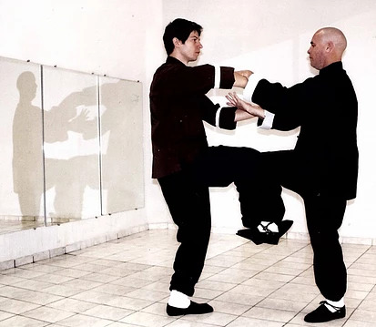

Treinando Chi Sau
Por Thomas Pinheiro
O estilo wing chun tem como principio básico para o funcionamento de suas teorias na prática; a necessidade de se treinar e desenvolver a percepção, a sensibilidade corporal. A sensibilidade requer relaxamento do corpo e o contato físico com o outro. A vantagem que a sensibilidade oferece ao praticante, está em desenvolver uma defesa ou ataque, ou os dois juntos, de maneira precisa e explosiva, com muita velocidade, e possibilitando infinitas combinações de técnicas de acordo com a necessidade do momento.
Os exercício de nome chi sau (braço colado) vêm a acrescentar a prática das técnicas de bloqueio e ataque o elemento da sensibilidade; existindo basicamente dois exercícios básicos de chi sau: o dan chi sau (exercício de um braço colado) e o seung chi sau (exercício de dois braços colados ). Dentro destes exercícios há inúmeras intenções com variações no treino, por exemplo: treino de chi sau mais pesado, mais leve, com ataques, com andada, com olhos vendados, com utilização de chute, etc...
Para a prática do chi sau se fazem básicos os aprendizados de 4 técnicas: o soco(yat gee chon choi), o tan sau, o fok sau e o bong sau; estes últimos três, técnicas de bloqueio. A base também se faz de extrema importância, pois libera no exercício o desenvolver do relaxamento e, consequentemente, a melhor qualidade em defesas e ataques.
O exercício do chi sau requer do praticante paciência ao treinar, pois inicialmente é comum a tensão que possa estar nos ombros, o que deixa dura toda a estrutura dos braços, o cansaço dos ombros chega a ser insuportável. Porém, a medida que se desenvolve e deixa-se de utilizar de forma dura os ombros, torna-se um treino menos desgastante e mais produtivo, focado na sensibilidade.
Na prática do chi sau estimula-se manter um equilíbrio de forças, equilíbrio esse que ao ser quebrado permite então sentir o momento exato para um ataque. Esta sensação revela uma brecha que pode ser utilizada para ambos os praticantes do exercício, isto quer dizer que tanto um quanto o outro poderá atacar com sucesso. Costuma-se exemplificar o chi sau como a ação da rebentação do mar em uma encosta de pedras.
A onda se choca inicialmente com um paredão, a principio a água é detida porém se reparar melhor, a água vai causando desgastes por frestas, fendas, e então penetrando, ou seja, rompendo o bloqueio inicial. A água procura por uma brecha. A comparação feita é justamente tocante em relação ao aprimorar o chi sau, desenvolver no praticante o encontrar de brechas no oponente, e também poder sentir suas deficiências a tempo de saná-las.
Quando se tem um conhecimento maior no treino de seung chi sau comumente se impõe aos praticantes a total liberdade de ataques, o que causa contato mais forte, porém muitos se esquecem de um detalhe crucial que é a postura básica dos braços, o tan o fok e o bong sau, quanto mais caprichadas as suas estruturas, dificultam mais o ataque do parceiro de treino, muitos confundem a questão de encostar no outro mas esquecem se realmente encostariam seu ataque com potência.
O exercicio já diz, braços colados, exercicio de atacar controlando o outro, quando isso não ocorre em treino, pode esquecer, está perdendo seu tempo, seria mais facil treinar apenas um sparring convencional. O estimulo é o principal elemento deste tipo de exercicio.